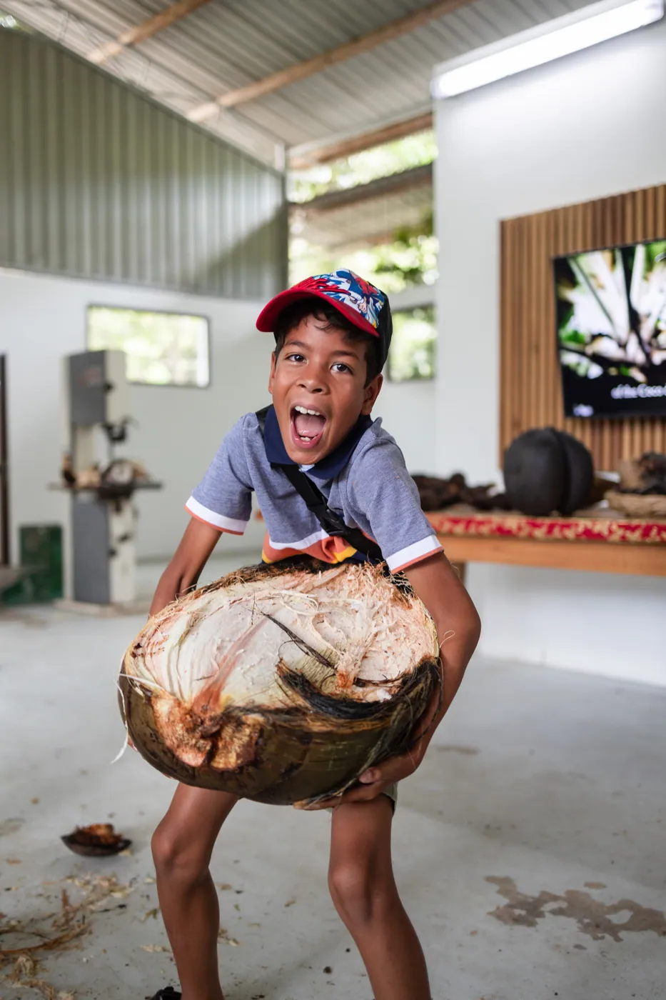
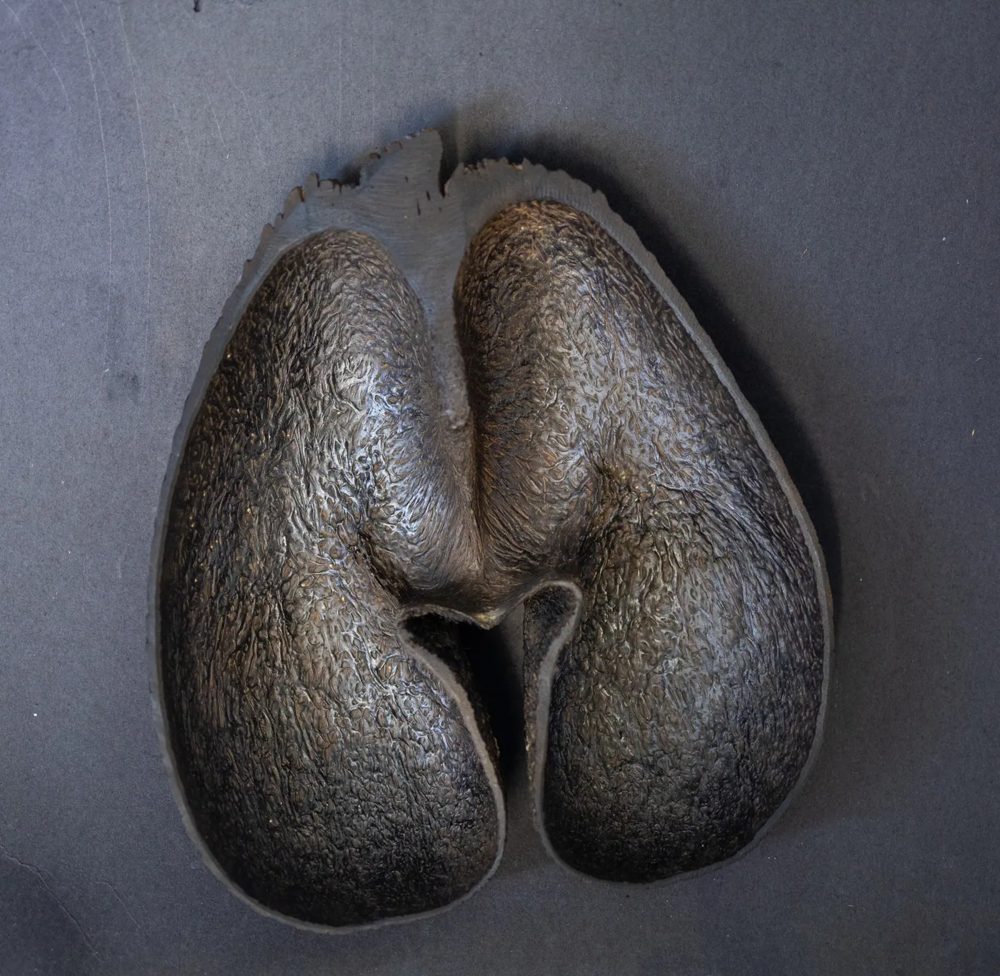

Why the Coco de Mer of the Seychelles Is So Expensive

In a world of rare treasures and natural wonders, few can match the allure of the Coco de Mer—the most extraordinary nut on Earth. Often called the “love nut” or cocofesse for its famously sensual shape, the Coco de Mer is the largest, heaviest, and most expensive seed in the world. But its high price isn’t just about size—it's about history, mystery, uniqueness, and long-term value.
At www.cocodemercollection.com, we believe the Coco de Mer is more than a nut—it’s a natural work of art, a collector’s item steeped in legend and luxury.
The World’s Largest and Most Mysterious Nut
The Coco de Mer (Lodoicea maldivica) grows naturally only in the Seychelles, specifically on the islands of Praslin and Curieuse, making it one of the rarest plants on Earth. Its seeds—commonly weighing between 15 to 30 kilograms (33 to 66 pounds)—are the heaviest and largest seeds known to humankind.

But what truly captivates people is its unmistakable shape: a voluptuous, double-lobed form resembling the female pelvis. This unique appearance earned it the nickname cocofesse in French Creole and gave rise to centuries of fascination and mystique.
A History Fit for Royalty
For centuries, Coco de Mer nuts were believed to come from mythical underwater forests, as they would occasionally wash up on distant shores in India and the Maldives. Local sultans, Indian maharajas, and early European explorers saw them as divine gifts or enchanted objects.
When their true origin was discovered in the Seychelles in the 18th century, the trees became a symbol of mystery and prestige. King Louis XV of France, Emperor Rudolf II of Austria, and other European royals coveted them for their rarity and exotic allure, proudly displaying them in their private collections.
In more recent decades, the Coco de Mer has continued to enchant celebrities, art collectors, royalty, and eco-luxury connoisseurs. Figures like Oprah Winfrey, Richard Branson, and members of the British royal family are known admirers of its beauty and symbolic power.
Each Coco de Mer Is Absolutely Unique
This is the essence of its value.
Every Coco de Mer takes 6 to 10 years to develop, and no two are alike. Each one is shaped by nature’s hand—every curve, line, and ridge is a singular expression of the island’s ecosystem. It is not just a seed—it is a one-of-a-kind sculpture, formed slowly by the elements.
Owning a Coco de Mer is like owning a living artwork. It’s not a mass-produced luxury.
It’s a unique object with its own story, soul, and silhouette—something no one else on Earth will ever own.
Only the Finest: Hand-Selected by Coco de Mer Collection
At Coco de Mer Collection, we meticulously select only the most exquisite Coco de Mer nuts. Our expert team handpicks each nut based on strict aesthetic and natural criteria—prioritising feminine, well-shaped, thick, and beautifully symmetrical specimens. These are the crème de la crème of the Seychelles forest: natural masterpieces with unmatched visual appeal and sculptural beauty.
Each Coco de Mer is then carefully cleaned, preserved, documented, and certified, ready for international collectors. We ship worldwide, ensuring every nut is accompanied by its official Seychelles export permit and certificate of origin, in full compliance with conservation and trade regulations.
A Beautiful Treasure—and a Smart Investment
Because of its rarity and global demand, the Coco de Mer is not just beautiful—it is a solid, appreciating asset. On average, Coco de Mer nuts appreciate in value by 2–3% per year, especially the most well-formed and certified examples. Collectors, nature lovers, and investors alike are drawn to its long-term potential as a luxury asset, much like fine art or rare wine.
Built to Last: Nature’s Durable Design
The Coco de Mer is not only stunning and valuable—it’s remarkably durable. Its shell is made from a unique, dense type of wood that naturally resists insect attacks and decay. With just a small amount of beeswax or natural polish, your Coco de Mer can be preserved for centuries as a striking home display or heirloom object.

Many 19th-century specimens in museums today still look as smooth and sculptural as the day they were harvested.
Final Thoughts: Nature’s Rarest Sculpture
At www.cocodemercollection.com, we offer more than just a product—we offer the opportunity to own a timeless legend. Whether you are an art lover, a naturalist, a romantic, or a collector of the rarest things on Earth, the Coco de Mer speaks to the desire for beauty, mystery, and meaning.
Own not just a nut—own a story. Own a sculpture. Own a Coco de Mer.